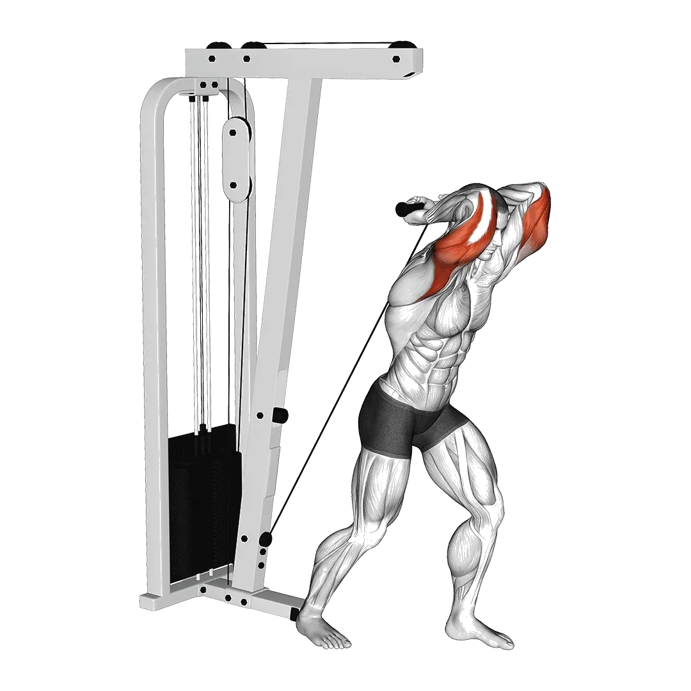

Überkopf-Trizepsstrecken am Kabelzug
Für Überkopf-Trizepsstrecken am Kabelzug kannst du Durchschnittsgewicht und Kraftstandards als Referenz für den Bereich Arme vergleichen. Die Zielmuskulatur ist Trizeps, Bizeps.

Durchschnittsgewicht: Mittelstufe
Richtwert für eine Person auf mittlerem Niveau.
Männer
93 lb
Frauen
51 lb
Überkopf-Trizepsstrecken am Kabelzug: Durchschnittsgewicht [1RM]
| Level | ||
|---|---|---|
| Einsteiger | 22 lb | 11 lb |
| Anfänger | 50 lb | 27 lb |
| Fortgeschrittene | 93 lb | 51 lb |
| Erfahrene | 148 lb | 82 lb |
| Elite | 214 lb | 119 lb |
Hinweis: Diese Standards sind 1RM-Schätzwerte auf Basis durchschnittlicher Kraftsportlerinnen und Kraftsportler. Körpergewicht, Alter und andere persönliche Faktoren können die Werte beeinflussen. Die detaillierten Daten stehen in der Tabelle unten.
Überkopf-Trizepsstrecken am Kabelzug: Kraftstandards(lb)
Männer nach Körpergewicht (lb) [1RM]
| Körpergewicht | Einsteiger | Anfänger | Fortgeschrittene | Erfahrene | Elite |
|---|---|---|---|---|---|
| 110 | 6 | 23 | 51 | 91 | 140 |
| 120 | 9 | 28 | 58 | 101 | 152 |
| 130 | 12 | 33 | 66 | 110 | 163 |
| 140 | 15 | 38 | 73 | 119 | 174 |
| 150 | 18 | 43 | 79 | 128 | 185 |
| 160 | 21 | 47 | 86 | 136 | 195 |
| 170 | 25 | 52 | 93 | 144 | 204 |
| 180 | 28 | 57 | 99 | 152 | 214 |
| 190 | 31 | 62 | 105 | 160 | 223 |
| 200 | 35 | 67 | 111 | 167 | 232 |
| 210 | 38 | 71 | 117 | 175 | 240 |
| 220 | 41 | 76 | 123 | 182 | 249 |
| 230 | 45 | 80 | 129 | 189 | 257 |
| 240 | 48 | 85 | 134 | 195 | 264 |
| 250 | 51 | 89 | 140 | 202 | 272 |
| 260 | 54 | 93 | 145 | 208 | 279 |
| 270 | 58 | 97 | 150 | 215 | 287 |
| 280 | 61 | 102 | 155 | 221 | 294 |
| 290 | 64 | 106 | 160 | 227 | 301 |
| 300 | 67 | 110 | 165 | 233 | 307 |
| 310 | 70 | 114 | 170 | 238 | 314 |
Männer nach Alter [1RM]
| Alter | Einsteiger | Anfänger | Fortgeschrittene | Erfahrene | Elite |
|---|---|---|---|---|---|
| 15 | 18 | 43 | 79 | 126 | 182 |
| 20 | 21 | 49 | 90 | 145 | 208 |
| 25 | 22 | 50 | 93 | 148 | 214 |
| 30 | 22 | 50 | 93 | 148 | 214 |
| 35 | 22 | 50 | 93 | 148 | 214 |
| 40 | 22 | 50 | 93 | 148 | 214 |
| 45 | 21 | 48 | 88 | 141 | 203 |
| 50 | 19 | 45 | 83 | 132 | 190 |
| 55 | 18 | 41 | 76 | 122 | 176 |
| 60 | 16 | 38 | 70 | 112 | 161 |
| 65 | 15 | 34 | 63 | 101 | 145 |
| 70 | 13 | 31 | 57 | 90 | 130 |
| 75 | 12 | 27 | 51 | 81 | 116 |
| 80 | 11 | 24 | 45 | 72 | 104 |
| 85 | 9 | 22 | 41 | 65 | 93 |
| 90 | 9 | 20 | 37 | 58 | 84 |
Frauen nach Körpergewicht (lb) [1RM]
| Körpergewicht | Einsteiger | Anfänger | Fortgeschrittene | Erfahrene | Elite |
|---|---|---|---|---|---|
| 90 | 5 | 17 | 36 | 62 | 93 |
| 100 | 6 | 19 | 39 | 66 | 98 |
| 110 | 8 | 21 | 42 | 70 | 103 |
| 120 | 9 | 23 | 45 | 74 | 108 |
| 130 | 10 | 25 | 47 | 77 | 112 |
| 140 | 12 | 27 | 50 | 80 | 116 |
| 150 | 13 | 29 | 53 | 83 | 120 |
| 160 | 14 | 31 | 55 | 86 | 123 |
| 170 | 15 | 32 | 57 | 89 | 126 |
| 180 | 16 | 34 | 59 | 92 | 130 |
| 190 | 17 | 35 | 61 | 95 | 133 |
| 200 | 18 | 37 | 64 | 97 | 136 |
| 210 | 19 | 39 | 65 | 100 | 139 |
| 220 | 20 | 40 | 67 | 102 | 141 |
| 230 | 22 | 41 | 69 | 104 | 144 |
| 240 | 23 | 43 | 71 | 106 | 147 |
| 250 | 23 | 44 | 73 | 108 | 149 |
| 260 | 24 | 45 | 74 | 111 | 152 |
Frauen nach Alter [1RM]
| Alter | Einsteiger | Anfänger | Fortgeschrittene | Erfahrene | Elite |
|---|---|---|---|---|---|
| 15 | 9 | 23 | 43 | 70 | 101 |
| 20 | 11 | 26 | 49 | 80 | 116 |
| 25 | 11 | 27 | 51 | 82 | 119 |
| 30 | 11 | 27 | 51 | 82 | 119 |
| 35 | 11 | 27 | 51 | 82 | 119 |
| 40 | 11 | 27 | 51 | 82 | 119 |
| 45 | 11 | 25 | 48 | 78 | 112 |
| 50 | 10 | 24 | 45 | 73 | 106 |
| 55 | 9 | 22 | 42 | 67 | 98 |
| 60 | 8 | 20 | 38 | 62 | 89 |
| 65 | 8 | 18 | 34 | 56 | 81 |
| 70 | 7 | 16 | 31 | 50 | 72 |
| 75 | 6 | 15 | 28 | 45 | 65 |
| 80 | 5 | 13 | 25 | 40 | 58 |
| 85 | 5 | 12 | 22 | 36 | 52 |
| 90 | 4 | 11 | 20 | 32 | 47 |
Hinweis: Angezeigte Gewichte an Maschinen und Kabelzügen können je nach Hersteller abweichen. Nutze sie als Vergleichswert unter ähnlichen Bedingungen.
Tracking und Analyse in der Shiba App
Gewichte, Wiederholungen und Fortschritt an einem Ort.
Tabellenhinweise
| Level | Beschreibung | Verteilung |
|---|---|---|
| Einsteiger | Beherrscht die saubere Technik und trainiert seit mindestens 1 Monat regelmäßig. | Untere 5% |
| Anfänger | Trainiert seit mindestens 6 Monaten regelmäßig. | Top 80% |
| Fortgeschrittene | Trainiert seit mindestens 2 Jahren regelmäßig. | Top 50% |
| Erfahrene | Trainiert seit mehr als 5 Jahren regelmäßig. | Top 20% |
| Elite | Trainiert diese Übung seit mehr als 5 Jahren gezielt. | Top 5% |
Weitere Übungen
Arme
Trizepsstrecken an der Maschine
Arme / Maschine
Sitzendes Kurzhantel-Trizepsstrecken
Arme / Kurzhantel
Trizepsdrücken im Untergriff
Arme
JM Press
Arme
Tate Press
Arme
Ring-Dips
Arme / Körpergewicht
Bank-Dips
Arme / Körpergewicht
Wrist Curl
Arme
Reverse Curl mit Langhantel
Arme / Langhantel
Reverse Wrist Curl
Arme
Kurzhantel-Wrist Curl
Arme / Kurzhantel
Kurzhantel-Reverse Wrist Curl
Arme / Kurzhantel